Characters
Grand Theft Auto V has three main characters which interact with each other. You can switch between each character during a mission or in the open-world.
Here is a list of the main characters ordered by the time you unlock them.
-
Franklin Clinton: He's the first character you play as in the game after the prologue mission. A young gang member who after meeting Michael, starts to get involved in bank heists.
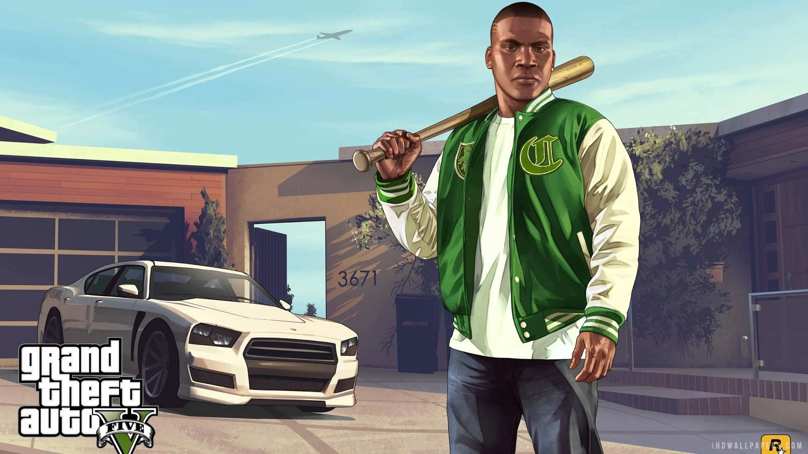 -
Michael De Santa: He's the second character you can play as in the open world. A middle-aged family man who is a retired bank robber, however, after an incident, he's forced to get back to the criminal life.
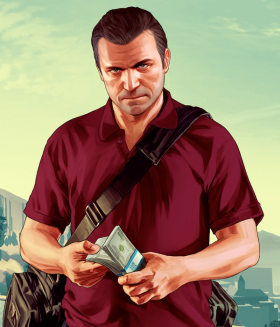 -
Trevor Philips: He's the third character you can play as in the open world. A criminal sociopath who does illegal business in the outskirts of Los Santos. After finding out his old friend Michael is alive, he decides to move to Los Santos.
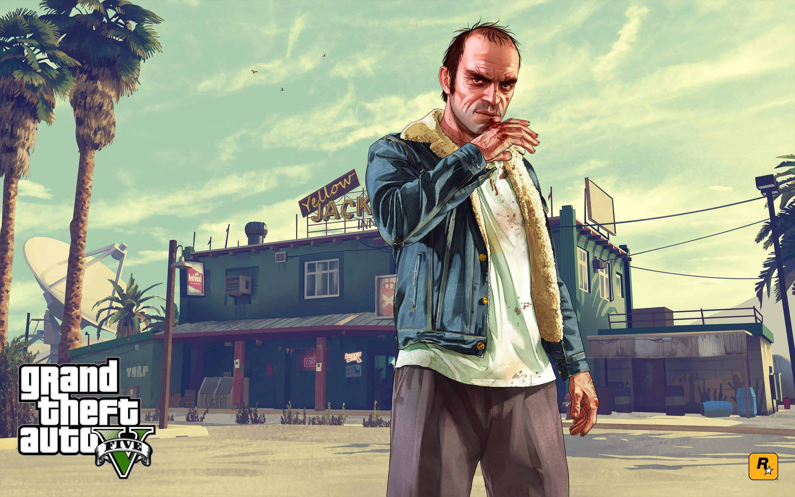
In addition, here is a list of non-playable characters that are relevant to the story.
-
Lamar Davis: Franklin's best friend.
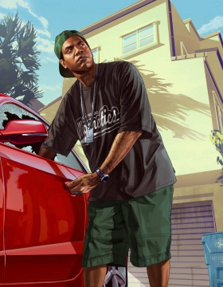 -
Lester Crest: He helps our main characters orchestrating heists.
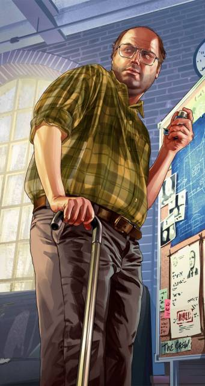 -
Jimmy De Santa: Michael's son.
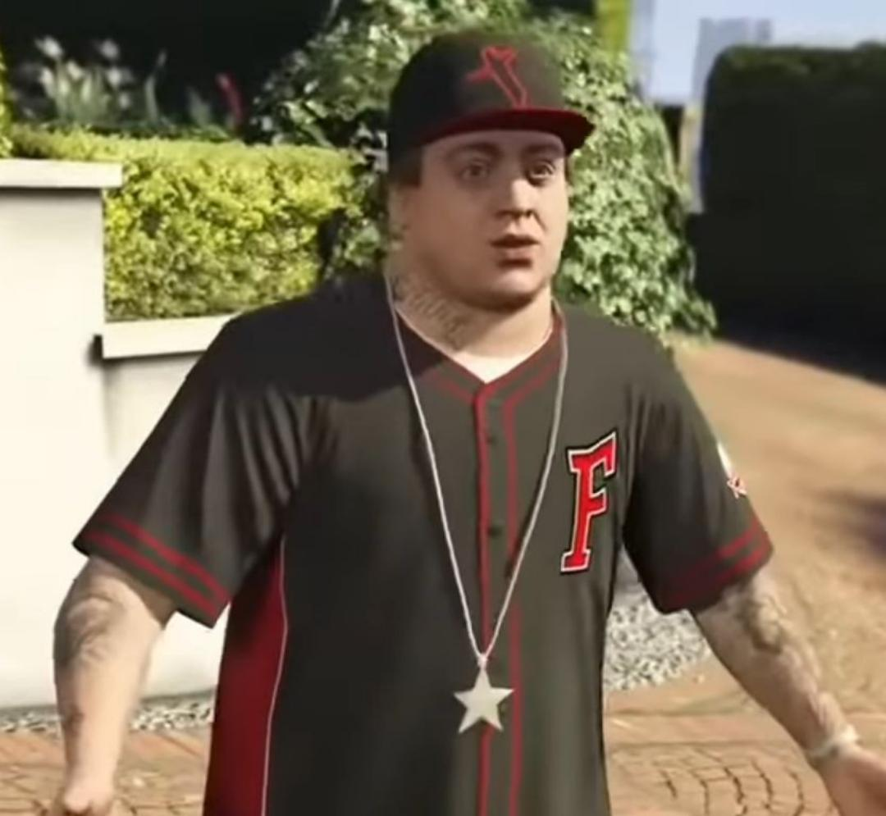 -
Tracey De Santa: Michael's daughter.
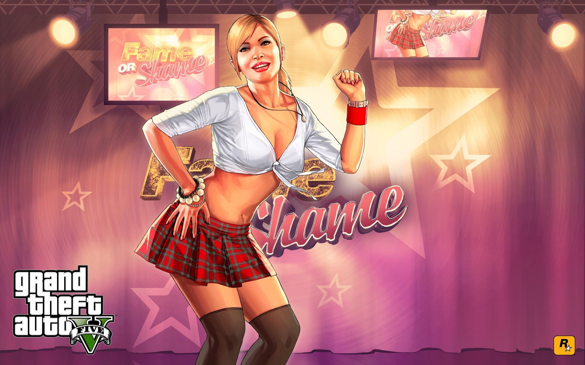 -
Amanda De Santa: Michael's wife.
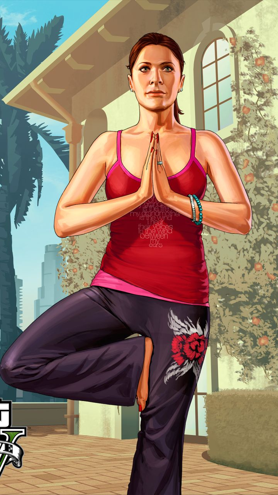 -
Steve Haines: A corrupt FBI agent (FIB in the game), one of the main antagonists.
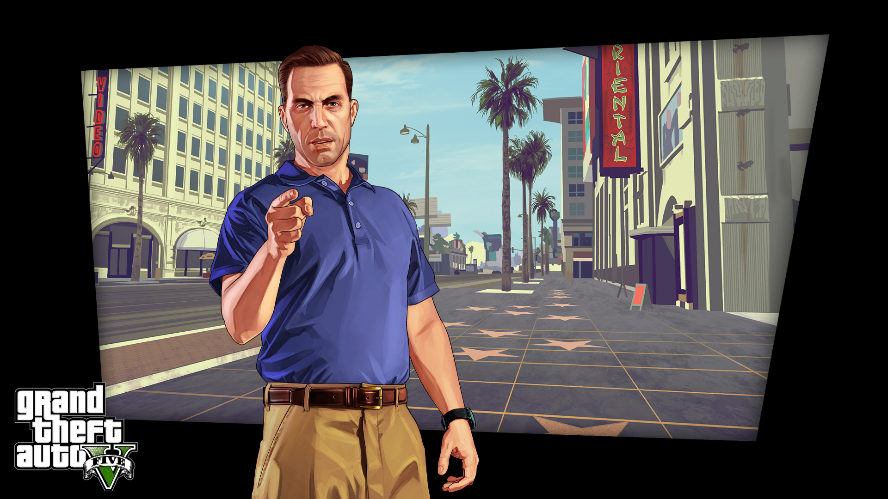 -
Dave Norton: A corrupt FBI agent, friend of Michael.
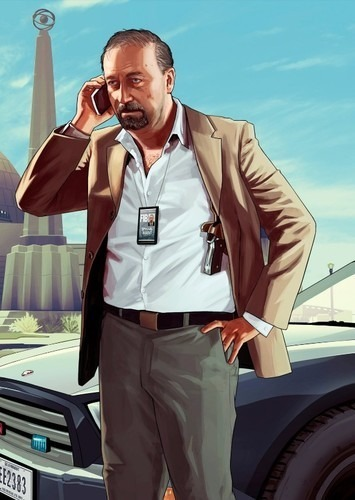 -
Ron Jakowski: Trevor's business partner.
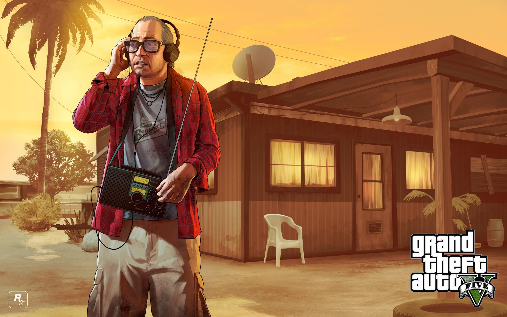 -
Stretch: Old friend of Franklin and Lamar, one of the main antagonists.
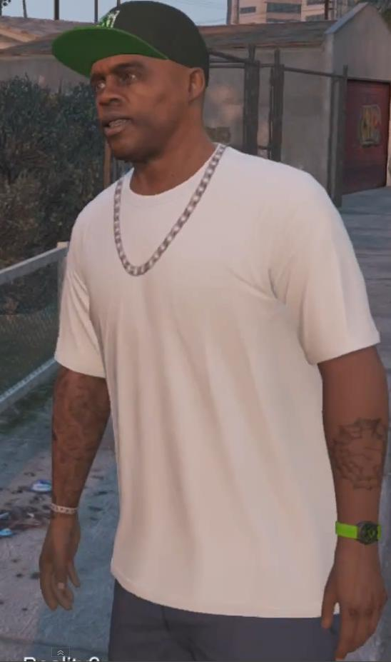 -
Dr. Friedlander: Michael's therapist.
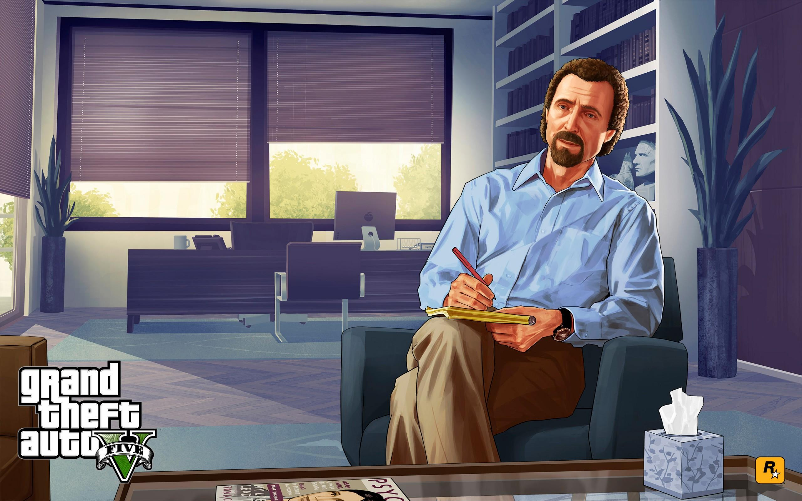 -
Devin Weston: A capitalist, powerful individual, one of the main antagonists.
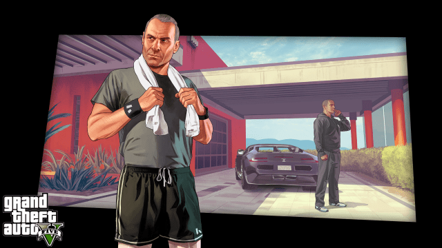 -
Martin Madrazo: A latino-american, mafia boss
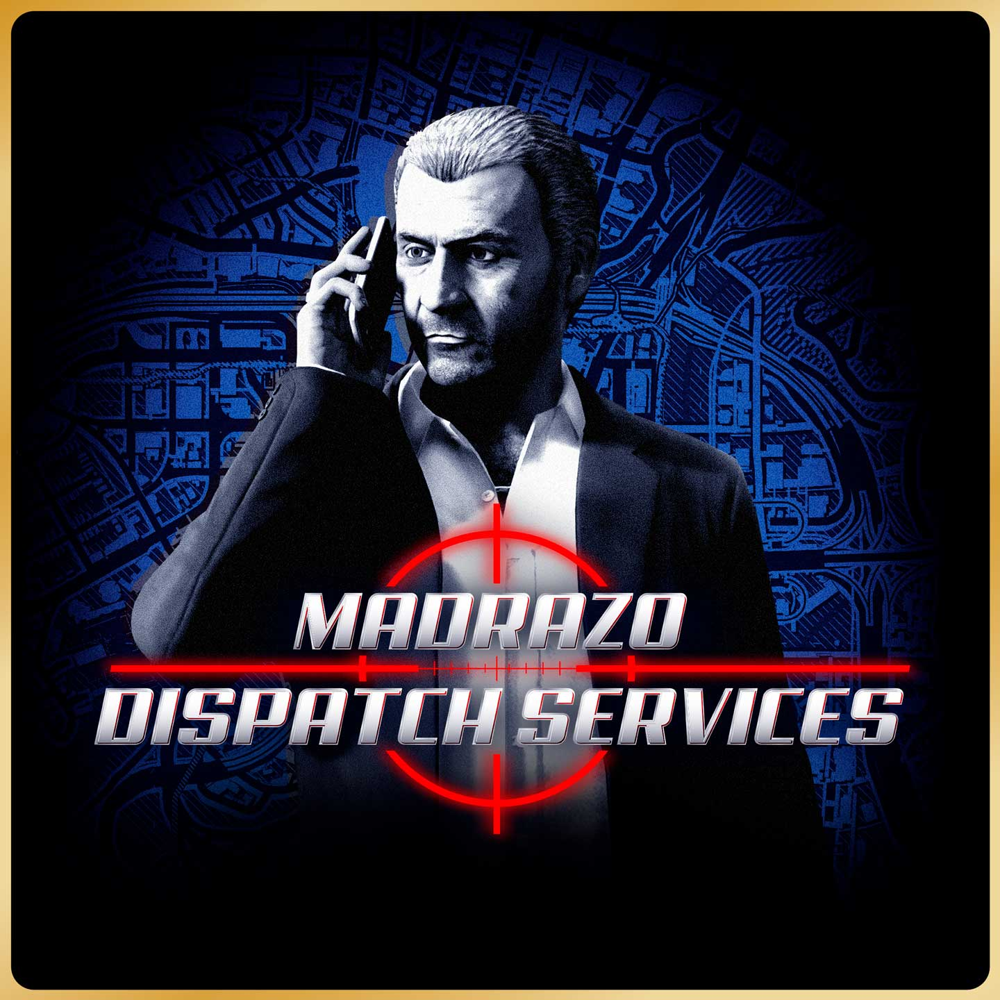 - Wei Cheng: Leader of the Chinese triads of Los Santos.